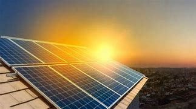
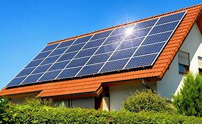
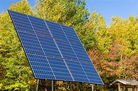
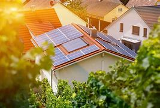
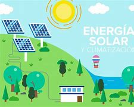

¿Qué es la energía solar?

Introducción a la Energía Solar
La energía solar es una forma de energía renovable que se genera a partir de la radiación electromagnética emitida por el sol. Este recurso energético es fundamental para la sostenibilidad del planeta, dado que representa una alternativa viable a los combustibles fósiles y puede ser aprovechada mediante diversas tecnologías.La energía solar es una de las fuentes de energía más prometedoras en la transición hacia un sistema energético más limpio y sostenible. Con tecnologías en constante evolución y una creciente inversión en su desarrollo, se espera que la energía solar juegue un papel fundamental en la reducción de la dependencia de combustibles fósiles y en la mitigación del cambio climático.
Fundamentos Técnicos
La energía solar se puede clasificar en dos categorías principales: Energía solar fotovoltaica y Energía solar térmica. 1.Energía Solar Fotovoltaica (FV)
 Principio de Funcionamiento: Se basa en el efecto fotovoltaico, donde materiales semiconductores, como el silicio, generan una corriente eléctrica al ser expuestos a la luz solar. Este proceso se produce en las celdas solares, que están organizadas en módulos o paneles.Eficiencia: La eficiencia de conversión de la energía solar en electricidad depende de varios factores, incluyendo la calidad del semiconductor, la temperatura y la irradiación solar. Las tecnologías avanzadas, como las celdas de heterounión y los paneles bifaciales, están en desarrollo para mejorar esta eficiencia, que actualmente oscila entre el 15% y el 22% para paneles comerciales.
Inversores: La electricidad generada es corriente continua (CC) y debe ser convertida a corriente alterna (CA) para su uso en la mayoría de los hogares. Los inversores juegan un papel crucial en este proceso.
Energía Solar Térmica
 Principio de Funcionamiento: Captura la radiación solar para calentar un fluido, que puede ser agua o un fluido térmico, que luego se utiliza para calefacción o generación de electricidad a través de ciclos termodinámicos.Colectores Solares: Existen dos tipos principales de colectores:
Colectores de Placa Plana: Utilizados principalmente para calefacción de agua en aplicaciones residenciales.
Centrales Termosolares: Utilizan espejos para concentrar la luz solar y calentar un fluido en un generador de vapor, lo que mueve una turbina para generar electricidad. Estas plantas pueden incluir sistemas de almacenamiento térmico que permiten la generación de electricidad incluso durante la noche.
Aplicaciones Avanzadas
 Sistemas de Energía Distribuida: La energía solar permite la generación de electricidad en el punto de consumo, reduciendo pérdidas en la transmisión y mejorando la resiliencia de la red eléctrica.
Sistemas de Energía Distribuida: La energía solar permite la generación de electricidad en el punto de consumo, reduciendo pérdidas en la transmisión y mejorando la resiliencia de la red eléctrica.
Integración en Edificios (BIPV): Los paneles fotovoltaicos se integran en la arquitectura de edificios, proporcionando tanto energía como estética, lo que se conoce como "Building Integrated Photovoltaics" (BIPV).
Almacenamiento de Energía: Con el avance de tecnologías de baterías, como las de iones de litio, es posible almacenar la energía solar generada durante el día para su uso en períodos de baja producción, lo que aumenta la viabilidad del uso de energía solar en aplicaciones residenciales y comerciales.
Desafíos y Oportunidades
 A pesar de su potencial, la energía solar enfrenta varios desafíos:Intermitencia: La producción de energía solar es variable y depende de factores climáticos y horarios. La integración de sistemas de almacenamiento y redes inteligentes puede ayudar a mitigar este problema.
Requerimientos de Espacio: La instalación de paneles solares requiere espacio significativo, lo que puede ser un desafío en áreas urbanas densamente pobladas.
Conclusión
La energía solar es una solución energética fundamental en la lucha contra el cambio climático y la transición hacia un sistema energético sostenible. Con avances tecnológicos continuos y una creciente adopción global, se espera que la energía solar juegue un papel crucial en la matriz energética del futuro, contribuyendo a la descarbonización de la economía y al desarrollo sostenible.Ventajas
- Renovable y abundante.
- Reduce las emisiones de gases de efecto invernadero.
Desventajas
- Dependiente de las condiciones climáticas.
- Requiere inversión inicial alta en tecnología.